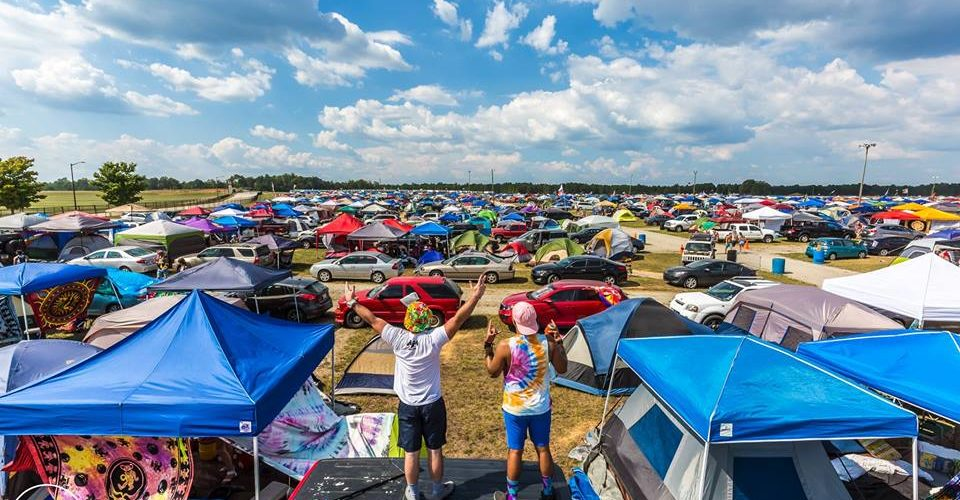

Highlights of Fyre Festival Press Image for Description!!
Travis Scott Performance
Travis scott poppped out at the festival and held a concert that had over 300 hundred people!! He played his latest album "astroworld" and of course did not forget to play his classics "goosebumps" and "antidote"
Lil Yachty Performance
Lil Yachty came out to Fyre festival and played his new album 'Fire Hazard' and did not forget to play his old hits 'One Night' and 'Broccoli ft. DRAM'
Adele Performance
Adele came a bit late but dominated the Fyre Festival with over 500 concert goers!! She played her latest album '25' and her hits which no one can forget, 'Rolling in the Deep' and 'Someone like you'
Camping Included

There was camping availible at the fyre Festival but festival goers would need to bring their own tents or be compensated by getting an emergency tent.